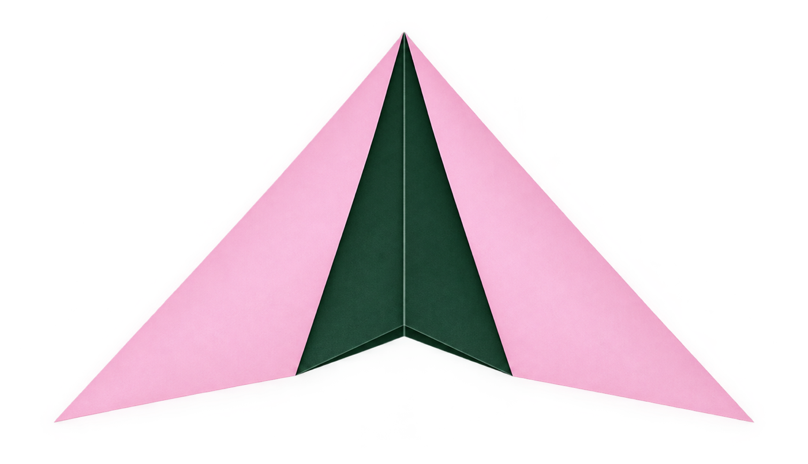

Sosh Media
Creative Marketing Studio
sosh

We make the
internet like YOU
Strategy, Design & Stories, all in one place
Come on in
Branding · Content Shoot · Social Media Management · Performance and Growth Marketing · Influencer Marketing · Creative Designing · Brand Experiences & Activation ·